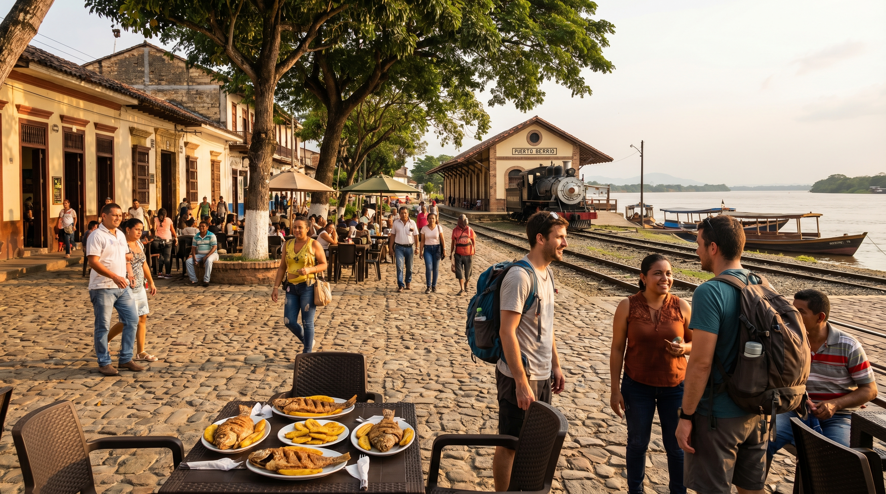

3 días / 2 noches
Ruta 1 — Puerto Berrío esencial
Ciudad, parques y gastronomía. Primera inmersión en el corazón ferroviario y ribereño.
Itinerario sugerido
- 1Medellín — origen y regreso (bus o vuelo).
- 2Apartahotel San Diego — base en Puerto Berrío.
- 3Parque Principal y Parque Enrique Olaya Herrera.
- 4Estación del Ferrocarril de Antioquia.
- 5Puente Monumental — vista al Río Magdalena.
- 6Casa del río hotel, Café Río, Coyote Express, Piway — gastronomía local.